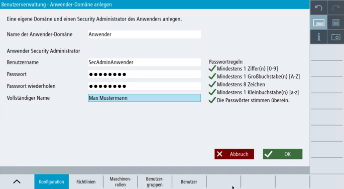

Wenn Sie eine eigene Domäne für den Anwender anlegen möchten, können Sie dies über den Dialog "Anwender-Domäne anlegen" nutzen.
| Hinweis |
Was macht der Hersteller / Was macht der Anwender?Wir empfehlen dem Security Admin des Herstellers, nach dem Anlegen der Hersteller-Domäne, für den Anwender eine eigene Domäne mit Benutzern / Rollen / Passwörtern anzulegen. Bei Übergabe der Maschine an den Endkunden können diese Daten vertrauensvoll an den Endkunden übergeben werden. |
Die Benutzerverwaltung ist aktiviert.
Eine lokale Domäne für den Hersteller ist definiert und der Security Admin für den Hersteller ist eingerichtet.
Sie verfügen über die Rolle "Security Admin Hersteller".

Lokale Anwender-Domäne anlegen
|
Die lokale Anwender-Domäne ist definiert.
Der Security Admin für den Anwender ist eingerichtet.
Sie sind als Security Admin Anwender im System eingeloggt.
Sie können optional die lokale Anwender-Domäne mit einer zentralen Benutzerverwaltung verbinden.
Sie können lokale Benutzergruppen, zentrale Benutzergruppen und lokale Benutzer für ihre Domäne einrichten.
Sie können die lokale Anwender-Domäne löschen.